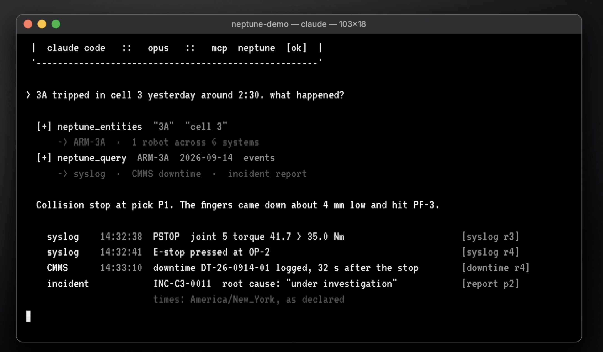

Neptune
Creating a persistent memory system for a robot fleet; mapping all the context data and robot logs of a deployment environment into one live model.

Creating a persistent memory system for a robot fleet; mapping all the context data and robot logs of a deployment environment into one live model.

Ask natural-language questions about live drone video. Qwen3-VL-2B base with a LoRA adapter, built as an extension of the aerial tracking system.
A YOLO26n detector fine-tuned on VisDrone, running on low-power onboard hardware (MaixCAM2 / AX630C). Switches between ByteTrack and BoT-SORT depending on whether the drone is hovering or moving.

Maps training data for world action models by causal completeness, and evaluates the data-collection market and the missing benchmarks for data quality. >200 downloads in less than a month of publication

Technical exercise I did to learn about ACT imitation learning techniques. A ROS 2–MuJoCo bridge, an episode recorder and a LeRobot conversion path, then an ACT policy trained and run on the recorded demonstrations.